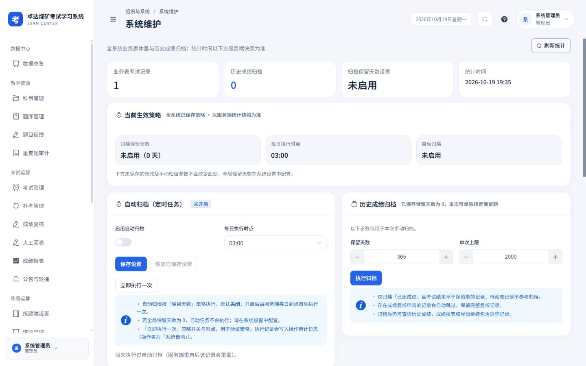
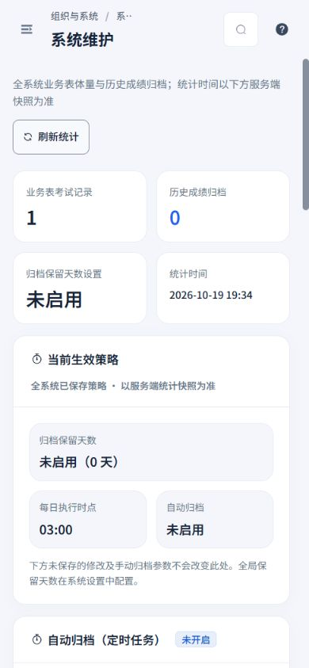
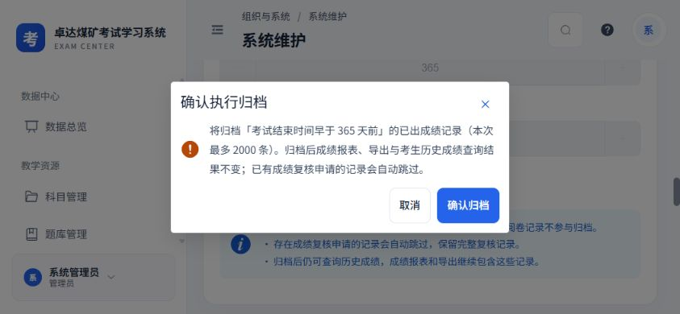
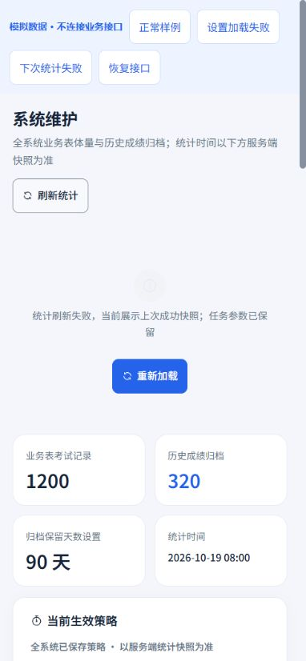
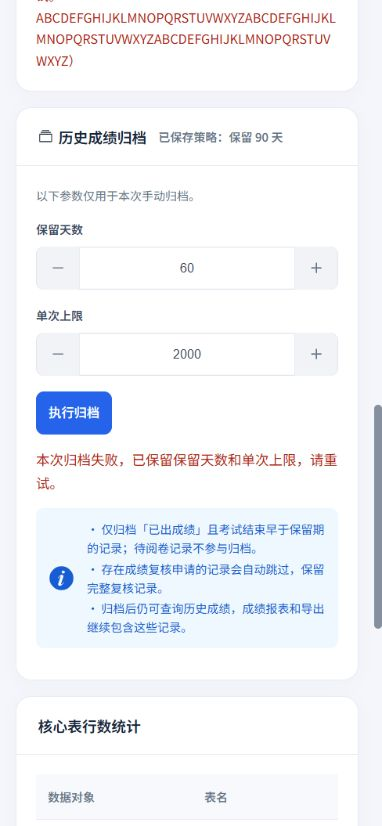
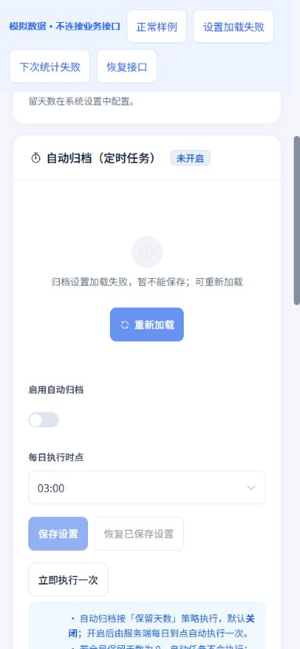

2026-10-19 · Workbuddy 01 · 本轮范围：系统维护与横屏顶栏
生效策略、归档参数与任务状态分开呈现
沿用白侧栏、浅灰蓝背景、蓝色操作与16 px卡片规范。桌面归档任务并列，手机纵向排列；统计与表单分别表达已保存值和本次操作范围。
本轮落地
- 当前生效策略只展示服务端快照。未保存的自动归档设置和本次手动参数独立显示，刷新保留输入，并可恢复已保存的自动设置。
- 手动保留天数首次按服务端策略初始化；缺少统计对象时显示未知。刷新失败标明上次成功快照，保留表单和本次执行结果。
- 设置未成功读取前阻止保存，提供重试。确认与请求期间阻止重复任务，互相关联的操作锁定，失败后保留参数并恢复操作。
- 手机输入、数值加减和按钮至少44 px；长错误和执行记录完整换行，表格在卡片内横向滚动。未开放能力继续仅展示说明，移除未经测量的耗时预测；修正769–900 px顶栏搜索文字挤压，保留44 px图标入口。
保留现有权限、接口、归档范围、复核记录跳过规则、确认流程，以及归档成绩的查询和导出能力。
实际页面
以下截图来自本地实际应用，数量与策略来自接口。真实归档确认框均点击取消；没有保存设置或执行真实归档。




隔离失败场景
以下使用实际页面组件与隔离内存接口；所有数据均为模拟，不连接业务接口。仅在模拟环境确认归档，以验证失败恢复。






验证结果
320×740、390×844、844×390与1440×900四种视口，分别检查实际页面、实际确认框、模拟长错误场景和顶栏搜索，共16组测量。页面无横向溢出，手机数值按钮44×44 px；确认框和底部按钮均可见，长执行记录与任务参数完整显示。
与上一轮科室及日志页面联合回归：6个测试文件、92项测试通过，包含维护任务状态、全站样式和设计覆盖检查；类型检查及生产构建通过。
本报告仅记录本轮维护页改动，历史验收记录保留在总目录中。